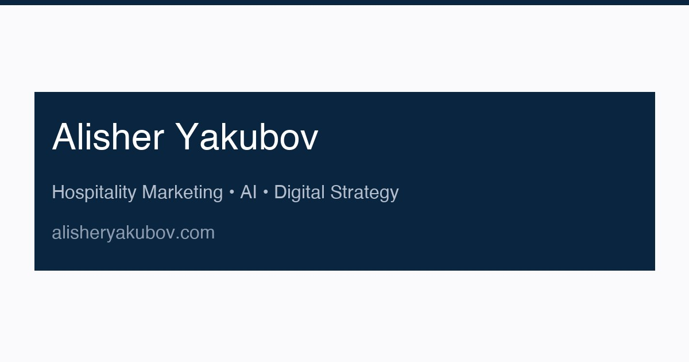
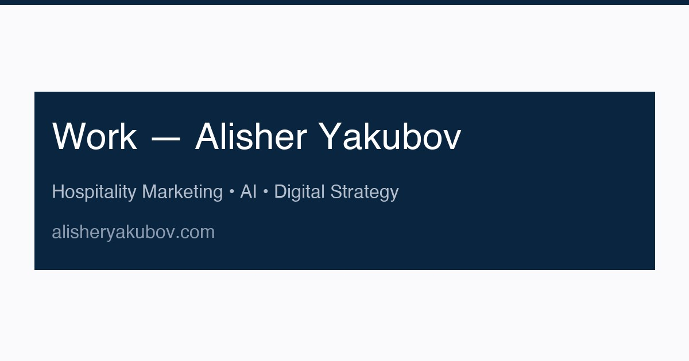
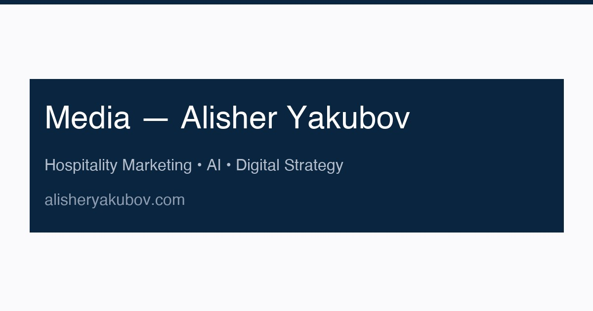
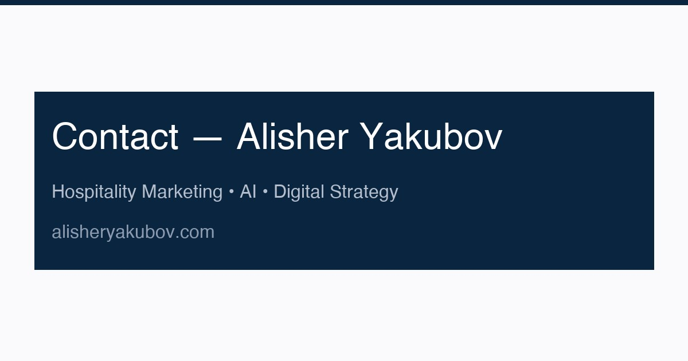

Logo / wordmark
AlisherYakubov
Professional portrait

Open Graph images








Gallery thumbnails


Real assets preserved from the source project — logo, portrait, OG images, and gallery thumbnails.



